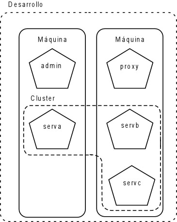

Ejercicios de creación de un cluster
Creación de un cluster
Este ejercicio será el más completo de los realizados hasta el momento. Vais a trabajar por parejas, utilizando dos máquinas para definir un sistema lo más real posible. El sistema a crear tendrá la siguiente estructura:

La máquina donde se defina el dominio será la que contenga el servidor de administración y un servidor adicional. La otra máquina contendrá el servidor proxy y dos servidores más. El servidor de administración y el proxy estarán fuera del cluster. Tened en cuenta que sólo se define un dominio, en la máquina donde tengamos el servidor de administración. Dentro de ese dominio se definen todos los servidores. Los servidores a definir son los siguientes:
Dominio: Desarrollo
| Nombre del servidor | Dirección de escucha | Puerto de escucha | Nombre DNS | Grupo primario | Grupo secundario |
| admin | 7001 | Compañero1 | |||
| serva | 4001 | Compañero1 | grupo1 | grupo2 | |
| proxy | 7001 | Compañero2 | |||
| servb | 4001 | Compañero2 | grupo2 | grupo1 | |
| servc | 5001 | Compañero2 | grupo2 | grupo1 |
Configurad el NodeManager en las dos máquinas para poder arrancar los servidores desde la consola de administración. Definid la aplicación proxyApp tal como se explica en teoría, desplegadla y asignarla por defecto al servidor proxy. Definid la replicación de memoria, con los grupos definidos en la tabla anterior.
Para probar la tolerancia a fallos vais a utilizar la siguiente aplicación shoppingcart.war (disponible en las plantillas). Esta aplicación mantiene un carrito de la compra en memoria. Desplegad la aplicación en el cluster. Ahora probad el funcionamiento de la aplicación. Para ello dejad únicamente un servidor en el cluster y el servidor proxy. Indicad la dirección del servidor proxy y llamáis a la aplicación shoppingcart (por ejemplo, http://miguel.dccia.ua.es:4001/shoppingcart). Almacenad varios elementos en el carrito de la compra. Llamad ahora a la dirección del servidor que está funcionando en el cluster y comprobad que el carrito de la compra es el mismo. Arrancad otro de los servidores del cluster e introducid algún elemento más en el carro. Por último parad el primer servidor y comprobad que el carro sigue siendo el mismo en el último servidor arrancado.